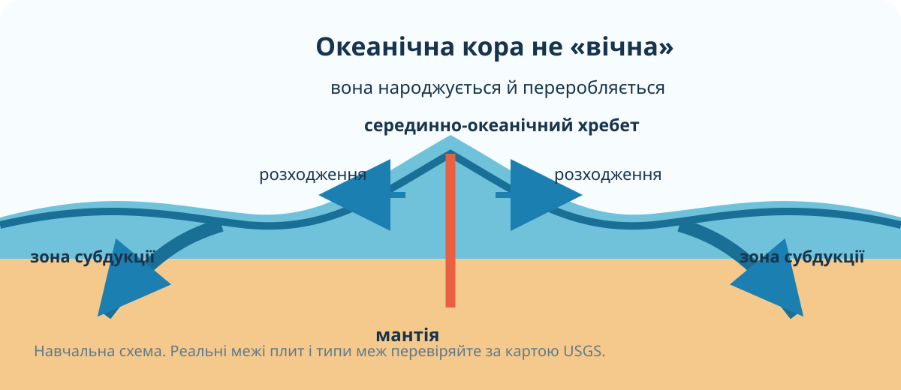
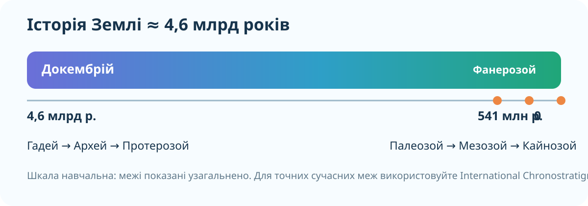

1. Гіпотеза до пояснення
Уявіть: Атлантичного океану колись не було, а Південна Америка й Африка були частинами одного великого масиву суходолу. Які сліди такого минулого мали б залишитися сьогодні?
Чи мають збігатися лише обриси берегів, чи важливіші інші ознаки?
Що буде переконливішим: однаковий колір ґрунту чи породи однакового віку й походження?
Як повинен змінюватися вік кори від серединно-океанічного хребта?
2. Реальні дані: сучасні межі плит

Джерело: U.S. Geological Survey, Earthquake Hazards Program. Карта показує великі літосферні плити та їхні межі.
3. Модель: як «народжується» океанічна западина

Спробуйте сформулювати причинний ланцюг: підйом речовини мантії → розходження плит → утворення нової кори → розширення океанічного басейну. Але пам’ятайте: це модель, а не фотографія надр.
4. Інтерактив: «Пангея → сучасні материки»
Це спрощена навчальна анімація, а не точна палеогеографічна реконструкція. Її завдання — показати принцип: взаємне положення плит змінюється з часом.
5. Реальна Земля: рельєф суші й океанічного дна

NASA Earth Observatory: глобальна топографія та батиметрія. На океанічному дні добре простежуються серединно-океанічні хребти й глибоководні жолоби.
Спостереження
Інтерпретація
6. Геологічний час: наскільки довга ця історія?

Землі близько 4,6 млрд років. Геологічна шкала допомагає розмістити події не «давно/недавно», а у визначеній послідовності. Для сучасних точних меж одиниць використовують International Chronostratigraphic Chart.
Відкрити актуальну International Chronostratigraphic Chart (ICS) →
7. Сортуємо докази
Натисніть на твердження і визначте, що це: спостереження, інтерпретація чи слабкий аргумент.
8. Коротке відео
NASA Now Minute. Під час перегляду зверніть увагу не на катастрофи, а на механізм: рух і взаємодію літосферних плит.
9. Теорія-опора — після дослідження
Літосферні плити
Літосфера поділена на великі й менші плити, які повільно рухаються одна відносно одної.
Материки
Материки переміщуються разом із плитами. Їхнє сучасне положення сформувалося внаслідок тривалої тектонічної історії.
Океанічні западини
Океанічна кора утворюється переважно в зонах спредингу, а в зонах субдукції занурюється в мантію.
Геологічний час
Геологічна шкала впорядковує еони, ери, періоди та інші інтервали історії Землі.
Пангея
Пангея — один із давніх суперконтинентів. Її розпад був етапом, а не «початком» усієї історії материків.
Сильний доказ
Найкращий висновок спирається на кілька незалежних джерел: геологію, палеонтологію, магнітні дані, вік океанічної кори й сучасну геодезію.
10. CER: доведіть, що Атлантика змінюється
C — Claim: сформулюйте коротке твердження про те, що відбувається з Атлантичним океаном.
E — Evidence: наведіть два різні докази з уроку — не дві перефразовані версії одного.
R — Reasoning: поясніть механізм, який поєднує ці докази з вашим твердженням.
11. Домашнє завдання
§10. У підручнику Гільберг Т., Довгань А., Совенко В. опрацюйте параграф і складіть невелику таблицю з трьох колонок: «подія — доказ — приблизний час». Мінімум 4 рядки.
Електронний підручник «Географія. 7 клас», Генеза →
Додатково: порівняйте навчальну шкалу уроку з актуальною ICS chart і знайдіть одну межу, числовий вік якої вас здивував.
12. Тест — 10 балів
Тест відкривається лише після заповнення даних учня/учениці.
Джерела даних
USGS — Plate Tectonics Map • USGS — This Dynamic Planet • ICS — International Chronostratigraphic Chart • NASA Earth Observatory